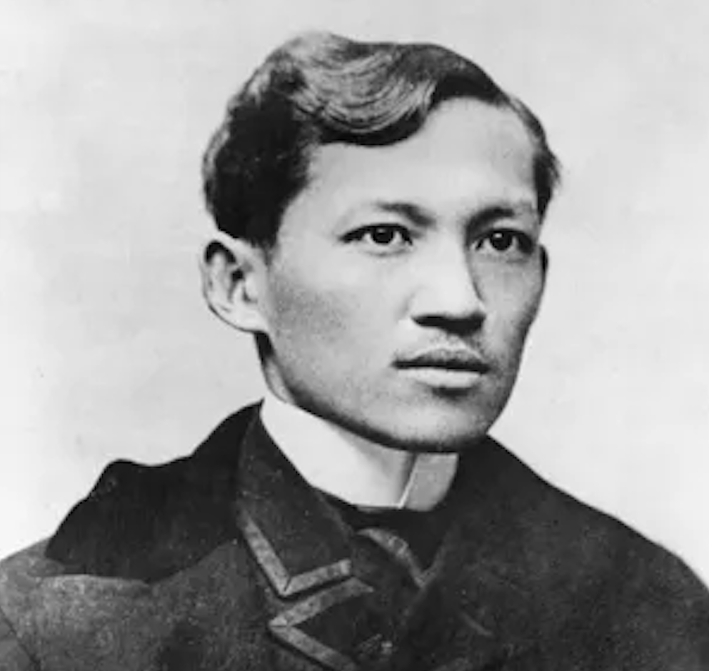
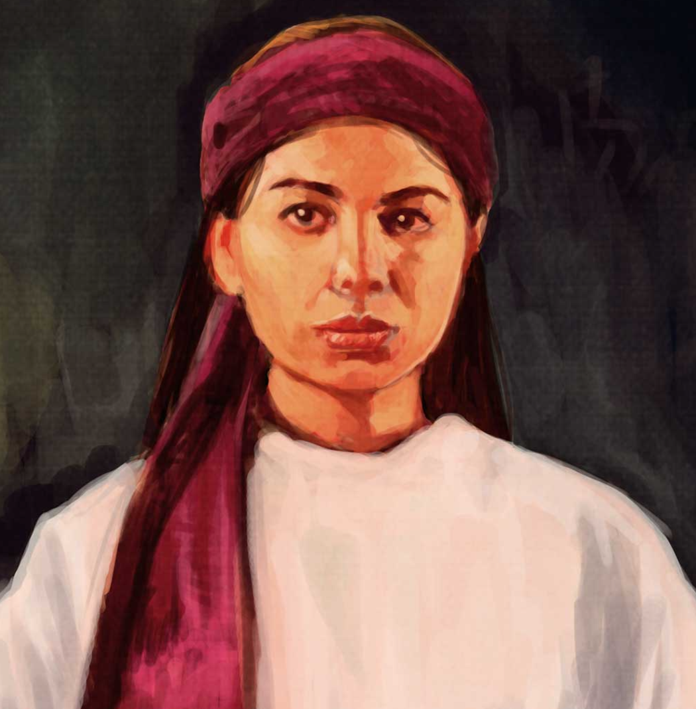
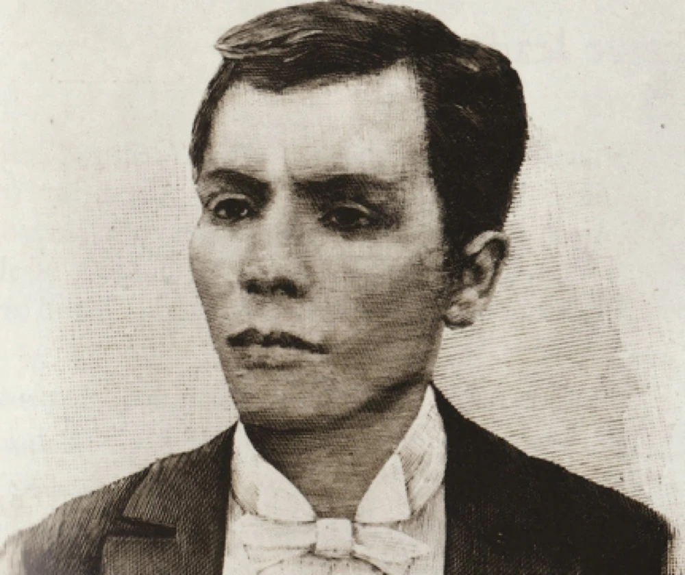
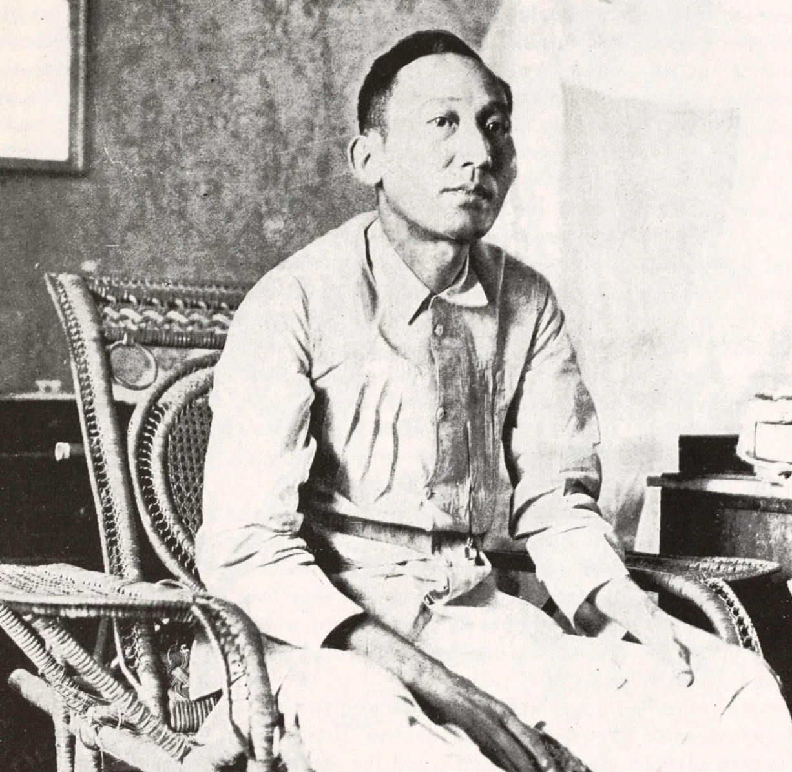
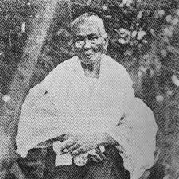

| Image | Timeline | Key Accomplishments |
|---|---|---|
|  Jose Rizal |
1861 - Birth of José Protasio Rizal Mercado y Alonso Realonda
1870 - Start of his school under Justiniano Aquin Cruz 1872 - Started studying in University of Santo Tomas as a scholar 1875 - Started studying in Ateneo 1878 - Started studying medicine 1887 - Finished Noli Me Tangere, his first novel 1891 - Published El Filibusterismo, the sequel to Noli Me Tangere 1892 - La Liga Filipina, exiled 1896 - Executed Info from Britannica and Your Dictionary |
1. Literary works, such as Noli Me Tangere and El Filibusterismo, that spoke out against issues during the time of Spanish Colonization. Some of his poems have also received recognition and awards. 2. He has received multiple degrees and has studied in different fields which shows his incredible intelligence. |
| Gabriela Silang | 1731 - Birth of María Josefa Gabriela Cariño Silang
1751 - Arranged marriage with a widower 1757 - Married Diego Silang 1763 - Executed Info from Encyclopedia.com |
1. Became a military general during a time when women were still considered secondary to men. 2. She led resistance group that had the longest sustained revolt against the colonizers. 3. Her legacy inspired women to fight for what they believe in. Info from Liberation School |
| Andres Bonifacio | 1863 - November 30, Birth of Andres Bonifacio
1892 - Founded Katipunan, gets married 1896 - Revolted against the Spanish, declared independence 1897 - Death Info from Timetoast and Britannica |
1. Founded of the Katipunan which was a secret society that led the rebellion against Spain. 2. Declared independence of the Philippines. 3. He is known as the nationalist proletariat hero and father of the Katipunan. Info from Harvard Divinity School |
| Apolinario Mabini | 1864 - July 23, Birth of Apolinario Mabini
1881 - Started studying at Colegio de San Juan de Letran 1894 - Received his law degree from University of Santo Tomas 1898 - Started writing for the constitution that was eventually short-lived 1903 - Died of cholera Info from Britannica |
1. He is known as a Filipino theoretician and spokesman of the Philippine Revolution. 2. He made decrees and the constitution for the First Philippine Republic. 3. He showed that despite his disability, he was able to courageously fight for our country using his mind and soul. Info from National Council on Disability Affairs. |
| Melchora Aquino | 1812 - January 6, Birth of Melchora Aquino or "Tandang Sora"
1896 - Supported the revolution, captured by the Spaniards. 1898 - set free 1919 - Death Info from Bayanihan and Encyclopedia.com. |
1. Despite her old age, she was able to contribute to the revolution by caring for the sick.
2. Served as an inspirtation for women. Info from Medium. |
{kind=link}